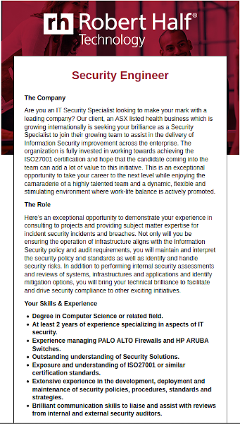
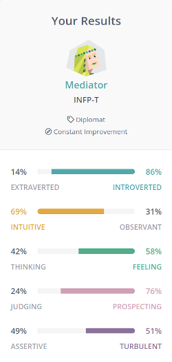
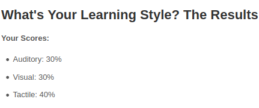
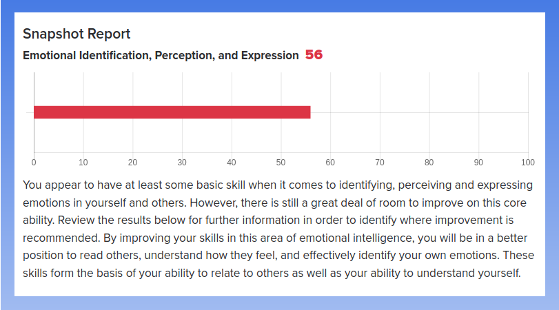

My name is Amy Jackson, my student number is S3833756 and email is S3833756@student.rmit.edu.au. I am a first generation Australian with both my parents migrating to Australia as children so I have been exposed to a lot of both Spanish and Australian culture while growing up. Before embarking upon the Bachelor of IT I was studying a Bachelor of Nutrition through La Trobe university but decided half way into it that the field was not one I could see myself working in so decided to make a radical shift to something that I had always been interested in! After finishing high school, I studied a Diploma of Information Technology Networking and was planning to continue on that career path but ended up being unable to commit to maintaining my full time job and also attend University on campus so being able to study online is making it possible to finally achieve that goal.
Besides the boring work/uni/life stuff, I share my life with a supremely fluffy Japanese Spitz named Panda. Shes been part of my family for 11 years and is a constant source of happy to everyone around her.
My interest in IT started way back in the 90’s when my dad gave me an old brick of a Toshiba laptop. It had a monochrome screen and ran Windows 95 – which is really showing my age – but I was obsessed with learning how to use it. After that, the only thing I ever wanted was a computer and the internet which finally came around in the form of dial up. I always used the internet as my primary form of social interaction because it was fascinating to be able to have access to people from all over the world and I’m even married to someone I met on the internet 15 years ago! It seemed like a logical thing to start studying when I left high school but life gets in the way and I continued to view IT as a hobby and got on with doing other things with my life.
Back in 2016, I built a computer from scratch with the intention of using it for gaming, however, from this I started Twitch streaming. One day, I was streaming and attempting to fix a MacBook Air I had installed Ubuntu on when one of my regulars who is particularly tech savvy suggested streaming an install of Debian on a MacBook Air. I realised that it was something I really enjoyed, unlike the Nutrition degree I was studying at the time, and contacted Open Uni about changing my course of study. I chose RMIT because it has a good reputation and the classes don’t require on campus attendance. The degree looked set out in a way that would be good for someone like myself who has no experience working in the field and needed a good foundation to build upon. I expect to learn the skills I need to change career and become a qualified candidate for jobs in the IT field.
Security Engineer Job Advertisment

This job is for the position of Security Engineer. I would be interested in this job as the topic of cyber security and the ever growing need to protect information systems from attack is quite interesting to me. This job, first and foremost, requires experience in a security role and a bachelor degree in a related field. On top of this, it specifically asks for experience managing Palo Alto firewalls and HP Aruba switches. Both of these companies offer certification programs related to their products and therefore these would be beneficial in apply for this job.
Currently, I have none of the experience necessary for this job or qualifications so it would be a long term plan to be an eligible applicant for a position like this one. Ideally the first step of the plan would be to complete the Bachelor of IT and meanwhile attempt to gain experience in an entry level IT security role. As it also specifies that the organisation is wishing to be ISO27001 certified, a knowledge of this standard would also be necessary to demonstrate.
There are the results of the three online tests that I took:
I took this quiz at 16 Personalities and my result was that I am an INFP-T.

These are the results of the Learning Styles Test I took at Education Planner which show that I am a tactile learner.
The third test I took was an Emotional Intelligence Test that gave me a score of 56%.

I think that the results of these tests can only be taken on face value, as they are not administered by a psychologist and rely on self-reporting to obtain their conclusions. While I can definately identify with some of the aspects of these tests it would be ill-advised to base too much investment in their results as humans are multi-faceted beings that can't be compartmentalised into distinct sub-classes.
In terms of team building, the result of the Myers-Briggs test indicates that I am the type of person who is a mediator. This sounds accurate to me and in a team I am usually the person who finds it easier to solve interpersonal issue within the group than be a leader or dominant person in the group. When forming a group, I think it would be important for a person like myself to have other people in the grou who are happy to take on the role of leader as I am somewhat uncomfortable with playing that role.
With the learning styles test results, I am a hands-on learner and find the easiest way to do things is to physically do things to understand them. Within the context of a group, this means that I am best suited to doing the practical, physical work and ensuring that I compensate for the restlessness I feel being stuck on the same task by breaking it up into shorter pieces to mitigate boredom.
I would like to develop an app that allows users to catalog and keep track of their daily skin care routine and products. Ideally, this would involve several aspects, including keeping a detailed record of when to use specific products, allowing users to keep track of when products are opened to ensure they are used within the correct window of time to ensure freshness, if there are any conflicts between product ingredients and batch manufacture dates where this information is applicable and accessible to ensure that products are being purchased and used while the active ingredients are still effective.
The motivation behind this project is that in recent years there has been a sharp increase in the amount of skincare products available as single ingredients, as opposed to the traditional idea of buying a product that has several active ingredients already mixed together for the consumer to use. While this approach to skincare has meant that it is now possible to tailor a regime that is specifically designed for your skin, it has the downfall of added complexity and the potential for conflicting products to be used which can result in adverse effects or reactions. On a more personal level, the motivation for this project comes from my daily life, which involves having a spreadsheet of which products to use when taped to the inside of my bathroom cabinet. Life would be a lot easier with an app specifically tailored to keep track of that for me.
The app will involve several sections that will interact with each other depending on how much information the user wants to input. Several functionalities will exist including:
Product inventory: Gives users the ability to create an catalog of skincare products they own, the date products are opened and the specified Period After Opening for each product to keep track of freshness and the ability to set reminders to restock if they notice they are running low on a product. The ability to scan products using their barcodes as a way to quickly add them to the inventory will also be a feature that will make the app more intuitive for users.
Schedule: A timetable style calendar that allows users to input the products they need to use at specific times or on specific days and also the ability to flag if there are any conflicts between the products they are using in their regimes. For example, if a user inputs a direct acid and a vitamin C product in the same routine at the same time, the app will flag this so the user knows that there will be an adverse reaction to using these products simultaneously.
Within the schedule, there will be the ability for users to set reminders, mark items off as complete and set patterns so their routine carries forward to future dates without having to input it into the schedule.
Batch number checker: A tool that allows users to input a batch number/code from a skincare product to check it’s date of manufacture and determine if it is still within the freshness date for an unopened product. This can be useful when purchasing products to check that you are not being sold old stock that would have decreased efficacy or when sorting out products in your own inventory to determine what to use first.
Progress tracking: This will allow you to take and store photos of your face so that you can have a visual measure of how your skin is progressing with the use of certain products/ regimes. As opposed to taking photos just using the standard camera, the app will guide users through taking photos within certain constraints such as a guide for how much of the photo their face takes up to ensure a consistency in the photos and also utilising the “flash” function of turning the screen white while taking the photo to provide adequate and consistent illumination in the photographs. Ideally, the app will integrate the use of the schedule with the progress tracker so that each photo you take will have the time, date, and products you had been using at the time of the photo stored with it as recorded in the schedule.
There will be seperate tools and technologies required to make this app available for both Android and iPhone users. Android primarily makes use of the Java and Kotlin programming languages, the Android SDK and Android Studio to develop apps. Apple devices make use of the Swift programming language and use Xcode for app creation. In order to implement the batch code checking feature, this will require access to a database of batch codes and manufacture dates.
Skills required include the ability to program in both Java and Swift languages so fluency in these would be the first thing needed to produce this app. Graphic design skills will also be required in order to make the app user friendly and intuitive to use so skills in Adobe Illustrator and Photoshop would be useful in this regard.
The outcome of the creation of this project will be an all in one app that can be used by people who have complex skin care regimes to track both their product inventory, use and progress. While there are some apps out there that implement some of these features, they are either product/brand specific or do not present the information in a user friendly way.
Another outcome of this app will be allowing accessibility to more complicated skin care regimes and a degree of harm reduction when using products that could potentially cause damage such as alpha/beta hydroxy and retinoids or by eliminating the use of products that are past their proven efficacy date such as vitamin C derivatives. Finally, it offers a more objective view of results so people aren’t relying on their subjective memories of what worked for them.